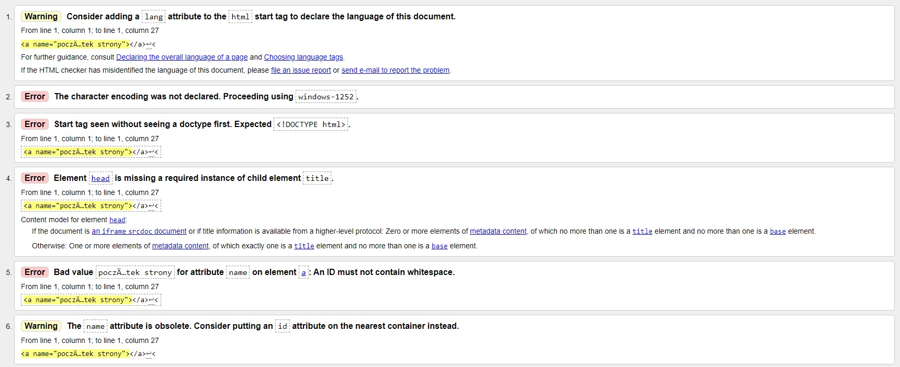

"Środek strony"
"Koniec strony" Poczta
Formularz
Plik
Tabela
80-175 Gdańsk Lawendowe Wzgórze 2101/3423
Johny Depp
Ulubiony zespół muzyczny:SAMURAI
Data urodzenia:30 Maja 2005 Roku
H2SO4
x*x=x2
Walidator HTML to specjalistyczny program lub aplikacja służąca do sprawdzania znaczników HTML na stronie internetowej pod kątem ewentualnych błędów składniowych i leksykalnych
Andrii
Andrii
Andrii
Andrii
Andrii
Andrii
Andrii
Voichuk
Voichuk
Voichuk
Voichuk
Voichuk
Voichuk
;) jest dobrze
:( smutek
('_') Serio?!!
:) radosc
(^0^)Siuuuuuuuu !
;( placz
"Początek strony"
"Środek strony"
"Koniec strony"
Poczta
Formularz
Plik
Tabela
Żart o Pracy Teściowa
Żart o 2022 Prawdziwa realność
Szkoła Pożar w szkole
poniżej są trzy wyliczenia z różnymi znakami wyliczenia
Ty zaproponuj swoje, związane z informatyką
Sysyemy informatyczne:
Przechowywanie danych
Komunikowanie się pomiędzy podzespołami systemów
Komunikowanie się ludzi z komputerami
Odbieranie zewnętrznych danych
Urządzenia służące do odbierania danych ze świata zewnętrznego
Urządzenia służące do wywierania wpływu przez systemy informatyczne na świat zewnętrzny
Projektowanie systemu i aplikacji
Programowanie (implementacja) i dokumentowanie
Testowanie i walidacja
Poniżej są trzy numerowania z różnymi znakami numerowania
Ty zaproponuj swoje, związane z informatyką
Języki oprogramowania
C++
C#
C
HTML
Python
Java
Php
Karty rozszerzeń
Karta graficzna
Karta dżwiękowa
Karta siecowa
Karta modemo-faksowa
Karta video
Popularne systemy operacyjne
Windows
Linux Ubuntu
MAC OS
Android
Poniżej będą trzy poziomy numerowania/wyliczenia z różnymi rodzajami numerowania/wyliczenia
Ty zaproponuj swoje, związane z informatyką
Budowa PC
1
Chlodzenie
Zasilacz
2
CD
Dysk twardy
Płyta główna
RAM
Procesor
3
Obudowa
"Początek strony"
"Środek strony"
"Koniec strony"
Poczta
Formularz
Plik
Tabela